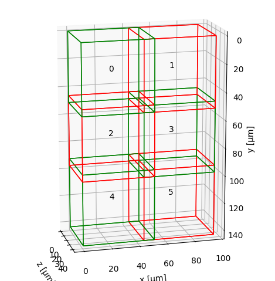

Defining input data
This section explains how to load our image data and pre-position input tiles / views in physical space just like the following example:

Before registering or fusing our dataset, we need to represent each view or tile as a MultiscaleSpatialImage — the core data structure of multiview-stitcher. Basically, this is a numpy-like array that also carries spatial metadata (axis labels, pixel spacing, origin, and affine transforms).
This page explains what that structure looks like, how to build it from arrays or files, and how spatial metadata is stored.
Core data structures
SpatialImage (sim)
A SpatialImage is an xarray.DataArray subclass that carries image data together with pixel spacing, origin coordinates, and one or more named affine transforms (stored under sim.attrs["transforms"]). Dimensions follow the convention (t, c, z, y, x) — any subset is valid. Each named transform is addressed by its transform_key.
MultiscaleSpatialImage (msim)
A MultiscaleSpatialImage is a DataTree that wraps one or more resolution levels (scale0, scale1, …). Each scale contains:
- an
imagedata variable — the pixel data as a (lazy) dask array - one or more transform data variables — one per named coordinate system (
transform_key)
DataTree('None', parent=None)
├── DataTree('scale0')
│ Data variables:
│ affine_metadata (t, x_in, x_out) float64 ← transform (transform_key="affine_metadata")
│ image (t, c, z, y, x) uint16 ← pixel data
├── DataTree('scale1')
│ ...
sim vs msim: which does each function expect?
registration.register takes a list of MultiscaleSpatialImage (msim).
fusion.fuse accepts either a list of SpatialImage (sim) or a list of
MultiscaleSpatialImage (msim), but the two input types cannot be mixed in
one call. Converting between the two is straightforward:
sim = msi_utils.get_sim_from_msim(msim) # extract scale0 SpatialImage from an msim
msim = msi_utils.get_msim_from_sim(sim, scale_factors=[]) # wrap a sim as an msim
When we only need the highest resolution, either representation is
equivalent and we can convert freely. If we want to make use of multiple
resolution levels (e.g. for faster registration at lower res, or for
multiscale fusion output), we load or build an msim with several scales —
the best way is to read it directly from OME-Zarr (see
Reading from OME-Zarr).
If we already have several SpatialImage objects representing different
resolution levels of the same image, use msi_utils.get_msim_from_sims.
The helper orders levels from largest to smallest shape and copies the
transform keys from the highest-resolution level to the coarser levels.
Coordinate systems and transform_key
Every affine transform attached to a view has a name called transform_key. This lets us store multiple coordinate systems on the same image without confusion — for example:
transform_key |
Meaning |
|---|---|
"stage_metadata" |
Raw tile positions from the microscope stage |
"translation_registered" |
Positions after registration |
"affine_metadata" (default) |
Pixel-spacing / origin only (identity rotation) |
We pass transform_key to both registration.register() and fusion.fuse() to tell them which coordinate system to use.
Tip
Use a descriptive transform_key for each processing step. The original stage positions are never overwritten — we can always fall back to them.
Building input from NumPy / Dask arrays
Use si_utils.get_sim_from_array to wrap any array as a SpatialImage, then msi_utils.get_msim_from_sim to turn it into a MultiscaleSpatialImage:
import numpy as np
from multiview_stitcher import msi_utils
from multiview_stitcher import spatial_image_utils as si_utils
tile_array = np.random.randint(0, 1000, (2, 50, 512, 512), dtype=np.uint16)
sim = si_utils.get_sim_from_array(
tile_array,
dims=["c", "z", "y", "x"], # dimension labels
scale={"z": 2.0, "y": 0.5, "x": 0.5}, # pixel spacing in physical units
translation={"z": 0.0, "y": 100.0, "x": 200.0}, # origin / tile offset
transform_key="stage_metadata",
c_coords=["DAPI", "GFP"], # optional channel names
)
# wrap in a MultiscaleSpatialImage (required by registration.register)
msim = msi_utils.get_msim_from_sim(sim, scale_factors=[])
Key parameters of get_sim_from_array:
| Parameter | Description |
|---|---|
array |
Any NumPy-compatible array (numpy, dask, cupy, …) |
dims |
Ordered dimension labels — any subset of ['t', 'c', 'z', 'y', 'x'] |
scale |
Pixel spacing per spatial dimension, e.g. {"z": 2.0, "y": 0.5, "x": 0.5} |
translation |
Physical-space origin (lower-left corner) of the tile |
affine |
Optional full affine matrix (overrides scale/translation). Useful for rotated or sheared tiles. |
transform_key |
Name of the coordinate system to store the transform under |
c_coords |
Channel names, e.g. ["DAPI", "GFP"] |
t_coords |
Time-point labels, e.g. [0.0, 0.5, 1.0] |
Affine transforms for rotated tiles
If our tiles are rotated or sheared (e.g. light-sheet multi-view data), pass the full homogeneous affine matrix via affine= instead of scale + translation. The matrix maps coordinates in "physical image coordinates" (scale/spacing and translation/origin already applied) to physical coordinates.
Putting it all together
A minimal end-to-end data loading snippet for a 3-tile 2-D dataset:
import numpy as np
from multiview_stitcher import msi_utils
from multiview_stitcher import spatial_image_utils as si_utils
tile_arrays = [np.random.randint(0, 100, (2, 512, 512)) for _ in range(3)]
tile_translations = [
{"y": 0, "x": 0},
{"y": 0, "x": 450},
{"y": 0, "x": 900},
]
spacing = {"y": 0.5, "x": 0.5}
msims = []
for arr, translation in zip(tile_arrays, tile_translations):
sim = si_utils.get_sim_from_array(
arr,
dims=["c", "y", "x"],
scale=spacing,
translation=translation,
transform_key="stage_metadata",
c_coords=["DAPI", "GFP"],
)
msims.append(msi_utils.get_msim_from_sim(sim, scale_factors=[2]))
The resulting msims list is the direct input to registration.register and
fusion.fuse. We can sanity-check the tile layout before proceeding:
from multiview_stitcher import vis_utils
fig, ax = vis_utils.plot_positions(msims, transform_key="stage_metadata", use_positional_colors=False)
Continue to the Registration overview for the next step.
Reading from OME-Zarr
ngff_utils provides two helpers to read OME-Zarr files (NGFF v0.4 / v0.5):
from multiview_stitcher import ngff_utils
# Read all resolution levels → MultiscaleSpatialImage
msim = ngff_utils.read_msim_from_ome_zarr("my_tile.ome.zarr", transform_key="stage_metadata")
# Read a single resolution level → SpatialImage
sim = ngff_utils.read_sim_from_ome_zarr("my_tile.ome.zarr", resolution_level=0, transform_key="stage_metadata")
Note
OME-Zarr versions 0.4 and 0.5 do not store affine transforms, so the loaded image will have an identity transform set for the given transform_key. Set the correct tile/view transforms via msi_utils.set_affine_transform (or si_utils.set_affine_transform for SpatialImage) before registration or fusion.
Reading tiles from OME-TIFF
ome-types (pip install ome-types) extracts per-tile positions and pixel spacing from the embedded OME-XML metadata. Pixel data is loaded lazily via dask.delayed so that only the tiles actually needed are read from disk:
import numpy as np
import dask.array as da
from dask import delayed
import tifffile
import ome_types
from multiview_stitcher import msi_utils
from multiview_stitcher import spatial_image_utils as si_utils
filepath = "my_dataset.ome.tiff"
ome_metadata = ome_types.from_tiff(filepath)
sdims = ["y", "x"] # adjust to ["z", "y", "x"] for 3-D data
msims = []
for itile, image in enumerate(ome_metadata.images):
pixels = image.pixels
spacing = {dim: getattr(pixels, f"physical_size_{dim}") for dim in sdims}
translation = {dim: pixels.planes[0].__dict__[f"position_{dim}"] for dim in sdims}
shape = {dim: getattr(pixels, f"size_{dim}") for dim in sdims}
dtype = np.dtype(pixels.type.value)
# lazy load — actual file I/O deferred until compute() is called
data = da.from_delayed(
delayed(tifffile.imread)(filepath, series=itile),
shape=[shape[dim] for dim in sdims],
dtype=dtype,
)
sim = si_utils.get_sim_from_array(
data,
dims=sdims, # add channel dimension here if present
scale=spacing,
translation=translation,
transform_key="stage_metadata",
)
msims.append(msi_utils.get_msim_from_sim(sim, scale_factors=[]))
See the example notebook for a full worked example with multi-cycle OME-TIFF data.